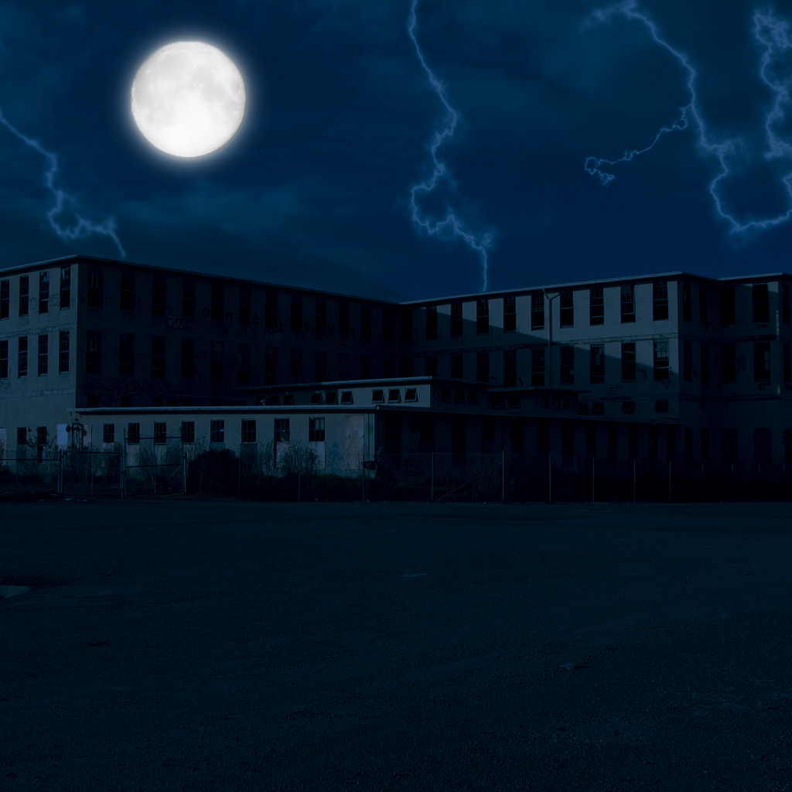

In the forgotten town of Ravenswood, rumors whispered of an abandoned hospital that harbored the secrets of centuries past. A daring soul, fueled by an insatiable curiosity, embarked on a ghost hunt through the chilling halls of the forsaken Evergreen Sanatorium. This ominous structure stood as a silent witness to the unknown, with shadows concealing the torment of a lost soul named Cliff.Navigating the dimly lit corridors, the air in Evergreen Sanatorium carried a heavy weight, an unseen burden from ages gone by. Local legends spoke of anguished cries echoing within the asylum's walls, a chorus of lost spirits seeking redemption. Undeterred by skeptics, our ghost hunter pressed forward, determined to unravel the mysteries buried within the hospital's haunted confines.As the investigator delved into the institution's history, cryptic messages adorned dilapidated walls, and faded records hinted at a dark secret. A peculiar revelation emerged within an old operating room, stained with the residue of macabre experiments—a theater of madness orchestrated by the enigmatic Dr. Everard Blackthorn. The doctor, hailed as a paragon of kindness by the masses, harbored a sinister alter ego, indulging in medieval scientific methods that pushed the boundaries of sanity.Clues, like discarded fragments of forbidden knowledge, painted a portrait of Dr. Blackthorn's twisted experiments. Cliff, unwittingly ensnared in the doctor's dual nature, became a phantom forever tethered to the sanatorium. The ghost hunter pieced together the grim puzzle, discovering that Cliff's demise wasn't a mere accident but a result of the doctor's insane, medieval scientific endeavors.The twist, shrouded in the dark heart of Evergreen Sanatorium, revealed a chilling paradox—the mad scientist, celebrated by the public as a benevolent figure, clandestinely engaging in horrifying experiments. Dr. Blackthorn's facade of kindness masked a malevolent force, leaving the town haunted by the echoes of twisted science and the tortured spirits trapped within the walls of the once welcoming sanatorium.
